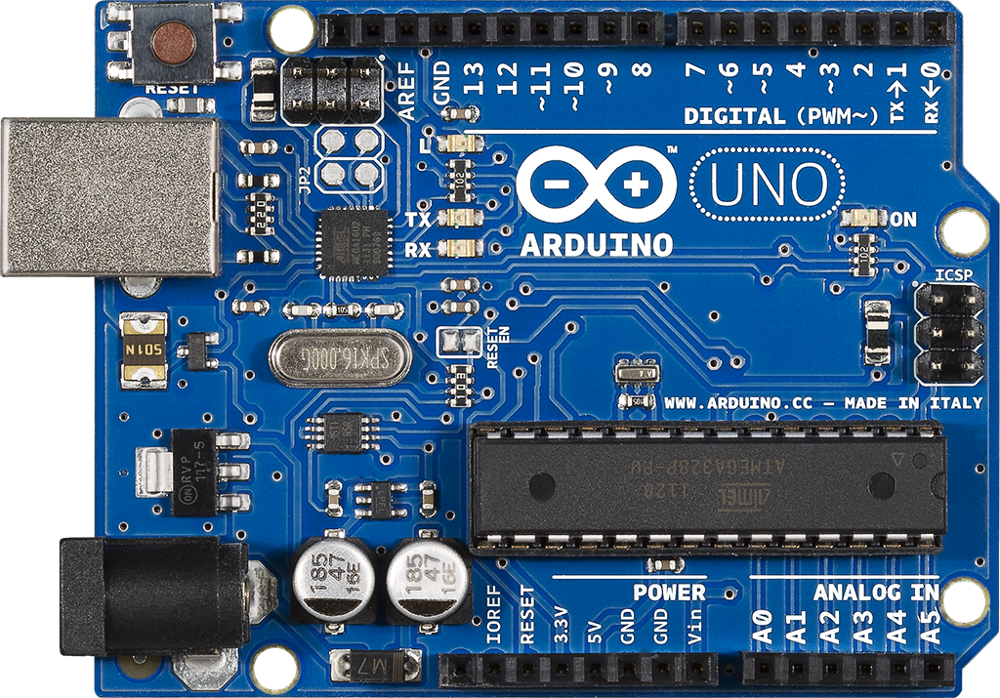

| نام ماژول: ماژول 01: آردوینو اونو |
سال ساخت: 2010-09-24 |
| دستهبندی: ماژول، برد توسعه |
نام شرکت سازنده: آردوینو - Arduino |
| کشور سازنده: ایتالیا |
موقعیت: تابلو 01: آردوینو اونو |
Arduino Uno Revision 3 Specifications:
- Dimensions: 68.6 mm L x 53.4 mm W
- Weight: 25 g
-
Processors:
- Main Processor: ATmega328P 16 MHz
- USB-Serial Processor: ATmega16U2 16 MHz
-
Memory:
-
ATmega328P:
- SRAM: 2 kB
- Flash: 32 kB
- EEPROM: 1 kB
-
ATmega16U2:
- SRAM: 512 bytes
- Flash: 16 kB
- EEPROM: 512 bytes
-
ATmega328P:
- USB Connector: USB Type-B
-
Supported Communication Protocols:
- Serial over USB Type-B
- Serial over Digital Pins 0 (RX) and 1 (TX)
- I2C
- SPI
- UART
- USART
-
Input/Output Pins:
- 14 Digital I/O pins, 6 of them provide PWM output (pins 3, 5, 6, 9, 10 and 11)
- 6 Analog Input Pins
-
Power:
-
Input Power Voltage Over Different Connectors:
- 7-12 V (nominal) over Barrel Plug
- 5 V over USB Type-B
- I/O Voltage: 5 V
- o DC Current per I/O Pin: 20 mA
-
Input Power Voltage Over Different Connectors:
آزمایشهایی که این ماژول در آنها به کار رفته است
- آزمایش 00: راهاندازیهای اولیه و تست ماژولهای آردوینو
- آزمایش 01: پیادهسازی چراغ راهنمایی با قابلیت چشمکزن
- آزمایش 02: پیادهسازی کرکره برقی
- آزمایش 03: پیادهسازی خودروی اسباببازی ساده
- آزمایش 04: پیادهسازی خودروی اسباببازی ساده با احترام به چراغ راهنمایی
- آزمایش 05: پیادهسازی ترموستات هوشمند
- آزمایش 06: اجرای نمونه ساده از خانه هوشمند
- آزمایش 07: پیادهسازی نمونه ساده خودروی هوشمند با سامانه پیشگیری از تصادف
- آزمایش 08: کارساز وب با اتصال از طریق اترنت
- آزمایش 10: سامانه امنیتی با قابلیت ارسال پیامکهای اضطراری